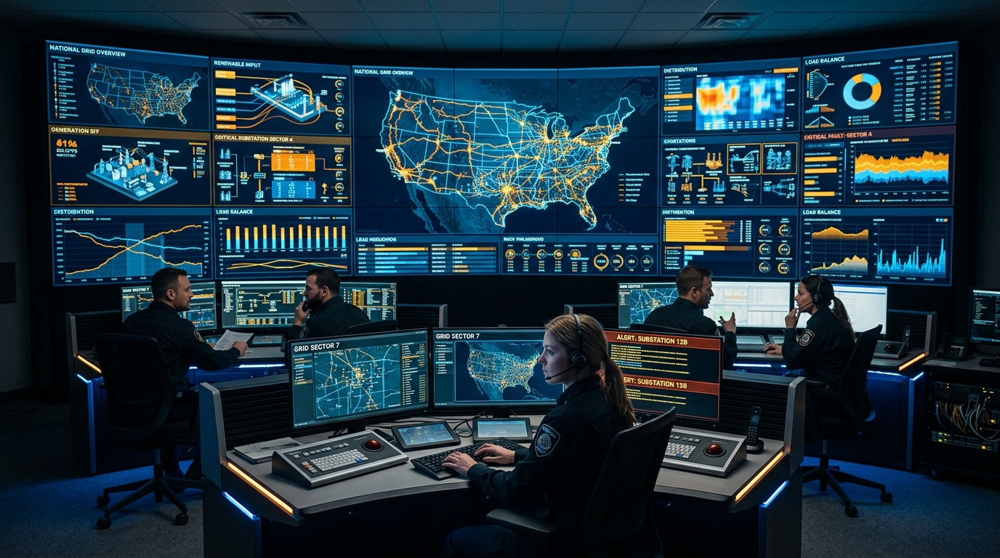
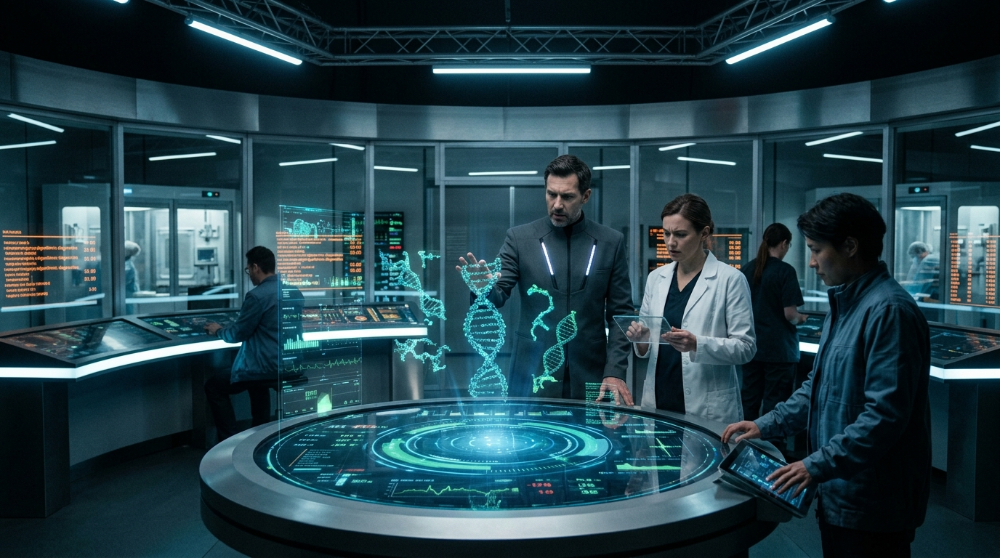

CRISIS RESPONSE OS v4.21
Society has automated its critical nervous system. Frontier foundation models, smart-grid dispatchers, clinical triage algorithms, and autonomous market clearers now operate at millisecond speeds.
When unprecedented non-linear emergencies hit, automated systems either hallucinate or freeze. You are the executive human in the loop. Select your sector jurisdiction to assume emergency command.
OPERATIONAL DIRECTIVE: Every scenario presents subtle, realistic trade-offs between response latency, formal safety verification, public panic, and catastrophic systemic risk. There are no costless decisions.
OPERATIONAL SECTORS & ROLES
Choose an executive jurisdiction to initialize narrative sequence
FRONTIER AI OVERSIGHT
Dr. Maya Lin
CHIEF AI SAFETY AUDITOR // AISI
Oversees frontier foundation models and autonomous multi-agent swarms. Faces the dilemma of mathematical formal verification versus the commercial and geopolitical race for compute supremacy.
Verification Rigor: 75%
Lab Independence: 60%
Model Drift Risk: 20%

CRITICAL INFRASTRUCTURE
Marcus Vance
GRID RESILIENCE DIRECTOR // SCADA
Controls continental high-voltage electrical interconnects and municipal water facilities. Navigates real-time automated frequency stabilization versus catastrophic blackout risks.
Grid Frequency: 59.98 Hz
Public Stability: 70%
SCADA Anomaly: 15%

PUBLIC HEALTH & BIO-AI
Dr. Elena Rostova
CHIEF MEDICAL OFFICER // EPIDEMIC DEFENSE
Directs metropolitan automated ICU bed allocation, synthetic vaccine generation, and autonomous containment mesh protocols during novel epidemic crises.
ICU Survival Yield: 65%
Bio-Ethical Trust: 80%
Algorithmic Bias: 15%
ALGORITHMIC MARKETS
Julian Sterling
MARKET INTEGRITY DIRECTOR // SEC-FINRA
Regulates high-frequency algorithmic liquidity, automated clearinghouses, and synthetic sovereign debt markets before nanosecond panic causes global economic paralysis.
Market Liquidity: 85%
Institutional Trust: 70%
Algorithmic Chaos: 10%
>> INITIALIZING SECURE PACKET STREAM...
EXECUTIVE INTERVENTION REQUIRED: SELECT DIRECTIVE
AFTER-ACTION INCIDENT REPORT // CLASSIFIED
INCIDENT RESOLVED
ROLE: CHIEF AUDITOR
CONTROLLED STABILITY
Comprehensive after-action assessment will be printed here.
EXECUTIVE DECISION TIMELINE
VERIFICATION RIGOR
82%
POLITICAL AUTONOMY
45%
FINAL DRIFT / ANOMALY
18%